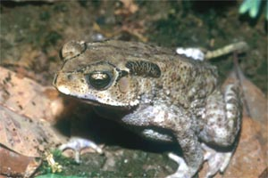

<body text="#000000" bgcolor="#FFFFFF" background="bg311.gif">

ЖАБА ЧЕРНОРУБЦОВАЯ (Bufo melanostictus) или малайская, обитающая в Юго-Восточной Азии,— самое распространенное земноводное, идущее и высоко в горы. В Гималаях она поднимается на высоту более 3000 м. По размерам и внешнему виду напоминает обыкновенную жабу. Верхняя сторона туловища этого животного от светлого желто-бурого цвета до черно-бурого. Головные гребни и роговые шипы, сидящие на бородавках, черные. Низ тела светлее, одноцветный или же с более темными пятнами. В период спаривания горло самца окрашено в красивый желтый цвет. Предпочитает возделанные местности, обочины дорог, лужайки. В лесу встречается реже. Днем скрывается под камнями, пнями и в норах. Выходит оттуда лишь незадолго до заката солнца и остается вне убежищ до рассвета. Питается муравьями, термитами, а также жуками и наземными моллюсками. Собирает корм с поверхности почвы. Размножается в течение всего года, но наибольшей активности размножения достигает в ноябре — декабре, в начале сезона муссонов. 